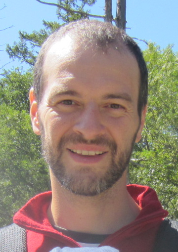

For full information, please refer to my CV (En) or 履歴 (日本語).
Personal information
| Name |
Zanlungo, Francesco |
| Address |
ATR International |
|
Intelligent Robotics and Communication Laboratories |
|
2-2-2 Hikaridai Seika-cho Soraku-gun |
|
Kyoto 619-0288 |
|
Japan |
| Telephone |
+81-774-95-1405 |
| Email |

|
| |

|
| Nationality |
Italian, Holder of Japanese permanent residence |
| Date of birth |
1976-03-10 |
| Gender |
Male |
Education and training
| 2004 - 2007 |
Ph.D. in Theoretical Physics |
| |
Graduate school of Physics, University of Bologna, Italy |
| |
Microscopic Dynamics of Artificial Life Systems |
| |
supervised by Prof. Giorgio Turchetti |
| 2003 |
Japanese language education |
| |
Yamasa Language School, Okazaki-shi, Aichi-ken, Japan |
| 2002 |
Italian Laurea in Physics with a major in Theoretical Physics |
| |
University of Milan, Italy |
| |
Studio numerico della cascata ultravioletta nel modello φ4 classico (in Italian) |
| |
supervised by Prof. Claudio Destri |
Work experience
| 2015 - |
Assistant Professor (Lecturer) at Kingston University, London, UK |
| 2009 - 2015 |
Researcher at
IRC Laboratories, ATR, Kyoto, Japan |
| 2008 - 2009 |
Visiting researcher at CPT (Theoretical Physics Center), Marseilles, France |
| 2008 |
Instructor at Milan Polytechnic University, Italy |
| 2007 - 2008 |
Post-doctoral researcher at University of Bologna, Italy |
| 2005 - 2006 |
Visiting researcher at Artificial Life Laboratory, Nagoya University, Japan |
|